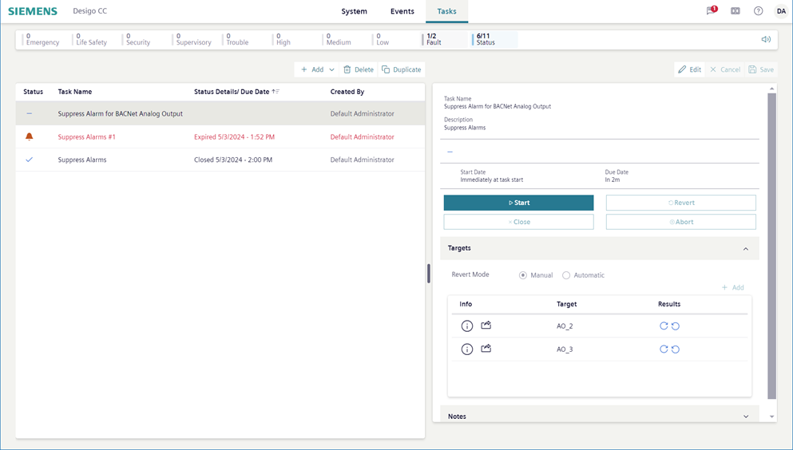

Operator Tasks Workspace
The operator tasks are in the Tasks tab. From here you can start and monitor existing tasks, as well as configure new ones. For instructions, see the step-by-step section.
The left-hand side of the pane displays the task list, and when a task is selected, the task details display on the right. The task details pane consists of
- General settings
- Targets
- Notes

Flex Client versus Install Client
If you are familiar with the Operator Tasks in the install client, note the following differences in the Flex client:
- Command buttons are only in View mode
- Distribution is not supported
- Creating a task in related items is not supported
- To set a parameter as the default value when editing targets you must check the default checkbox.